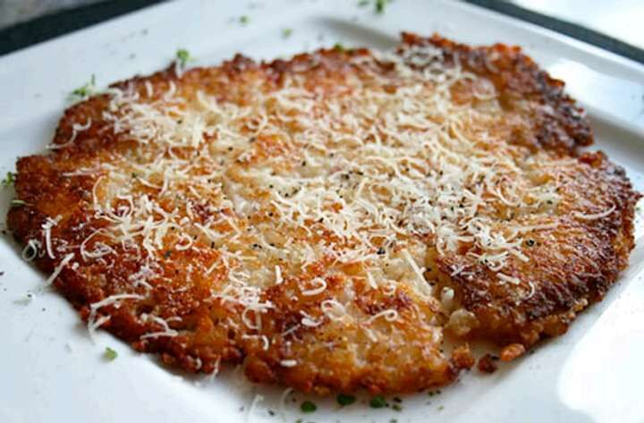

Risotta al Salto (AKA Risotto Milanese)

This is a wonderful way to use up leftover risotto, particularly simple risottos such as Risotto Parmesan or Risotto Milanese. The exterior is crisp and golden brown, while the interior remains creamy and soft. You really do not need an exact recipe to create this dish if you follow a few basic principles. I find a cast iron frying pan works best for this recipe if you have one.
Ingredients
- [unclear — the ingredient list is hidden behind the website footer in the original PDF]
Instructions
No instructions were included on the original page.
Notes
- The PDF shows the introduction and an "INGREDIENTS" heading, but the ingredients and directions are covered by the website footer, so they're missing here.